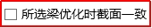

截面优化常见问题
1. 什么是截面优化？
截面优化含义：通过选择多组需要被调整的构件，并设定每组的构件目标（配筋率范围、应力比限值等）、设定每组的候选截面，最后启动计算。软件会自动迭代计算直至满足目标，并同时调整构件指标为无超限。可以理解为满应力设计法。
具体计算过程为：每次迭代，根据上一次计算结果的内力推算一个候选截面，从候选截面库中挑选一个最接近的截面带入，直至满足。注意如果初始构件本身满足目标（配筋率、应力比要求），则不会进行调整。在迭代过程中同时会调整构件指标为没有超限。
注意事项：
①截面优化目标是构件指标（应力比、配筋率），因此不会控制结构大指标（如周期比、位移比等）。但可以在“记录项”中记录结构指标变化。
②截面优化默认每跨一个截面，即寻找单跨最优解；若需要某一组为一个截面，可以勾选对应选项“”。
2. 截面优化使用场景？
使用场景1：仅对非抗侧力构件进行调整，可同时添加多组被调整的截面，每组赋予不同的候选截面及应力比、配筋率目标。
使用场景2：同时针对抗侧力及非抗侧力构件调整，并在“记录项”中记录工程量、位移等指标变化过程。
3. 截面优化注意事项
(1) 截面优化会根据目标(应力比、配筋率)寻找单跨最优解，因此同一组内截面各不一致，但可以勾选“组内截面保持一致”选项，保证一组为一个截面。但算法优化始终保证组内截面保持一致。
(2) 截面优化适用构件级别的调整，不控制结构指标，仅做记录。但算法优化通常用于结构指标调整。
(3) 注意，体量较大的模型不建议使用并行计算。可以通过计算模型文件里面的【yjk_log.txt】文件判断该模型是否适合并行计算，正常的【yjk_log.txt】文件如下所示。若是YJK结构模型使用并行计算后截面优化失败，该文件里面会有【程序崩溃】的字样，建议针对于这样的模型，不勾选【使用并行计算】。